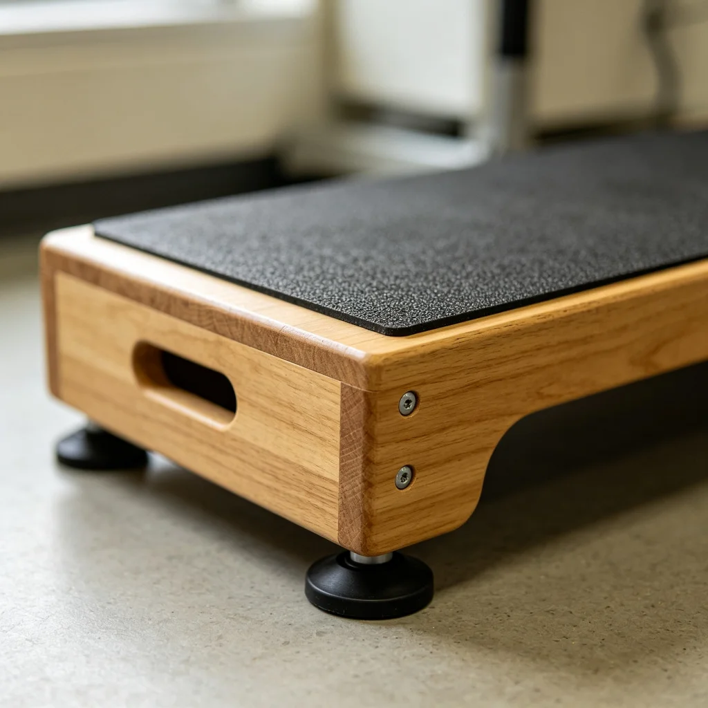

在現代家庭中，感恩節貓咪——節日餐桌上寵物安全已經成為越來越多人關注的話題。隨著寵物在家庭中的地位不斷提升，人們對於寵物的護理、健康和生活品質也有了更高的要求。本文將深入探討感恩節的貓咪：節日餐桌上的寵物安全的相關知識，為寵物主人提供實用的建議和參考。
節日期間的寵物安全
節日是歡樂的時刻，但對寵物來說也可能存在很多潛在的危險。節日裝飾品、特殊食物、大量訪客和嘈雜的聲音都可能讓寵物感到壓力或受傷。因此，在慶祝節日的同時，一定要特別注意寵物的安全和舒適。
和寵物一起慶祝的創意方式
- 寵物專屬節日餐：為寵物準備一份安全、美味的節日特別餐，讓牠也能感受節日的喜悅。
- 節日寫真：為寵物穿上可愛的節日服裝（在寵物舒適的前提下），拍攝一系列節日主題的寫真。
- 禮物時間：為寵物準備一份特別的節日禮物，如新玩具、零食或舒適的窩。
- 安靜時光：在熱鬧的慶祝活動之餘，留出一些安靜的時間陪伴寵物，讓牠感到安心和被愛。
需要避免的危險
在節日期間，有一些東西對寵物來說是特別危險的，需要特別注意：首先是節日食物，很多人類節日食物（如巧克力、葡萄、洋蔥、大蒜、酒精等）對寵物有毒，一定要放在寵物接觸不到的地方。其次是節日裝飾品，如蠟燭、彩帶、裝飾燈、小裝飾品等，可能引起燙傷、窒息或腸道阻塞。第三是嘈雜的聲音，如煙火、鞭炮、大量人群的喧鬧聲，可能讓寵物感到恐懼和焦慮，應該為寵物提供一個安靜、安全的躲避空間。
小結
感恩節的貓咪：節日餐桌上的寵物安全是每個寵物主人都應該重視的課題。透過不斷學習和實踐，我們可以為寵物提供更好的照顧，讓牠們健康、快樂地陪伴我們更長的時間。記住，寵物的健康始終是最重要的，不要等到出現問題才開始重視。從今天開始，為你的寵物制定一個全面的健康護理計畫吧！
希望本文的內容對你有所幫助。如果你有任何問題或建議，歡迎在下方留言交流。讓我們一起為寵物的健康和幸福努力！
